長期トレンド
JKMとJEPXシステムプライスの推移グラフ
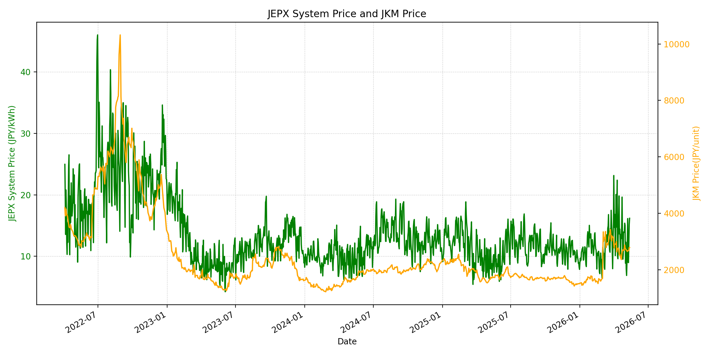
WTIの推移グラフ
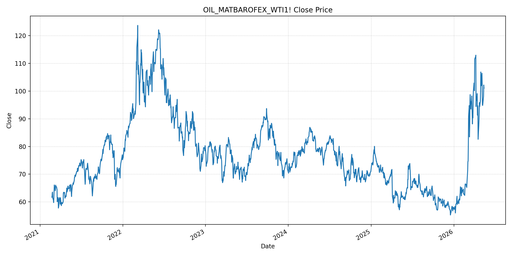
JEPXエリアプライスグラフ（直近一年分）
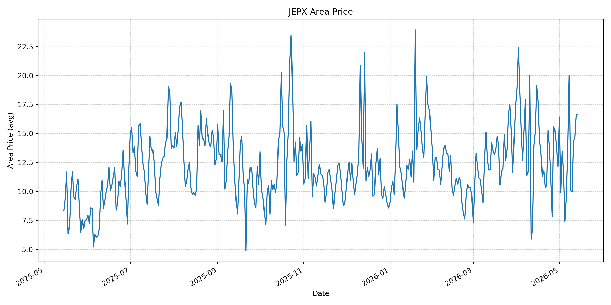
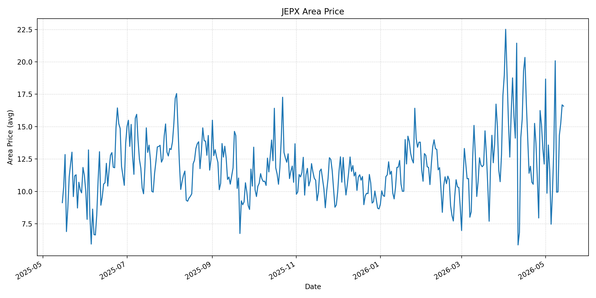
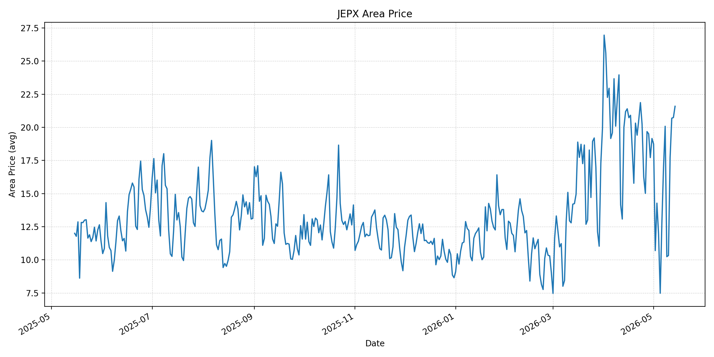
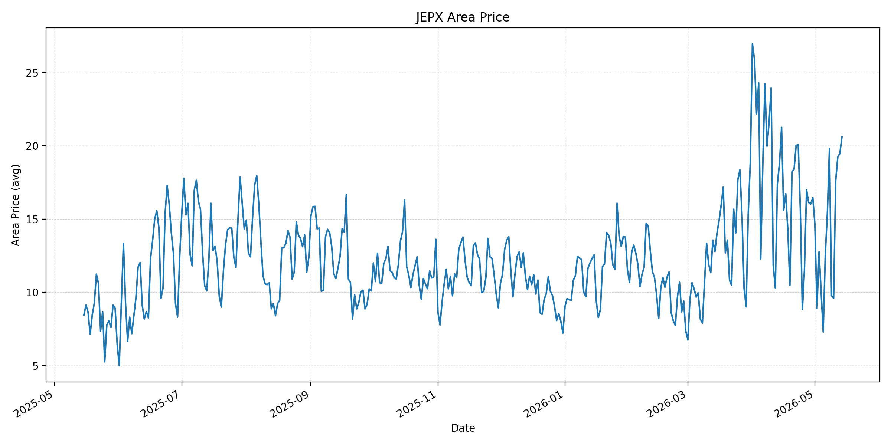
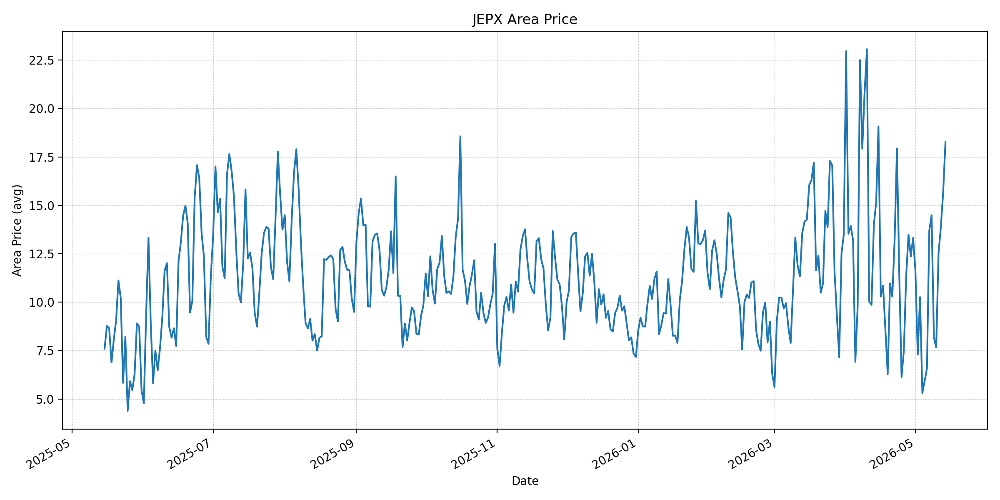
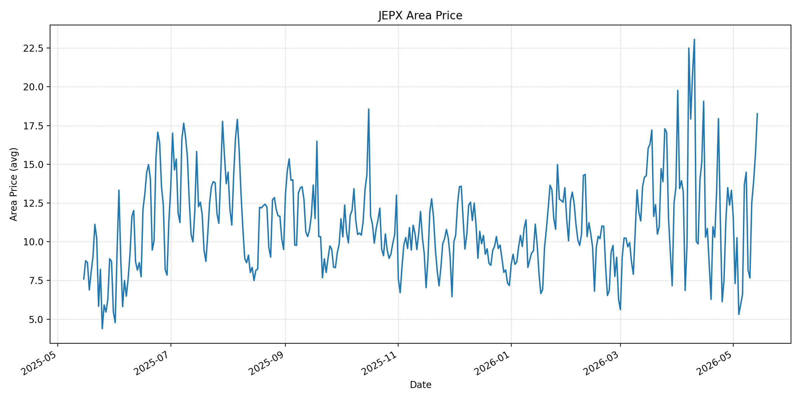
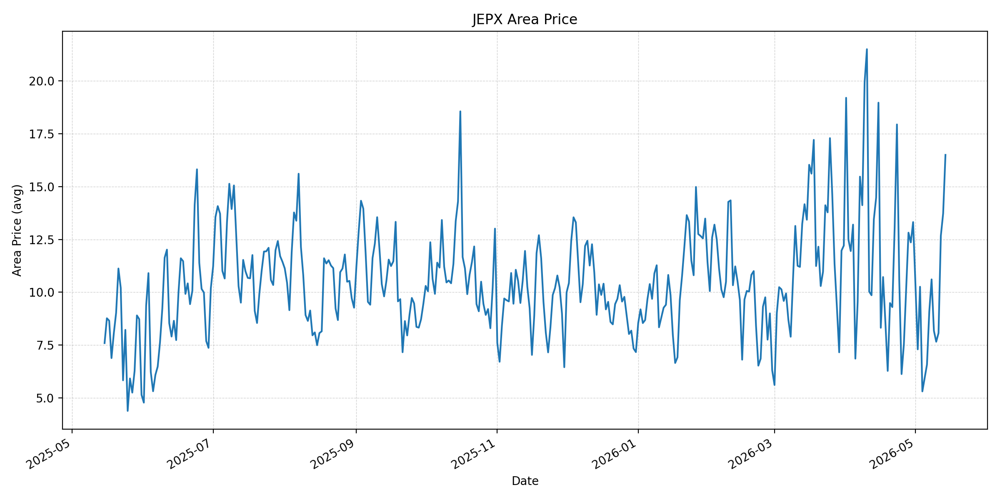
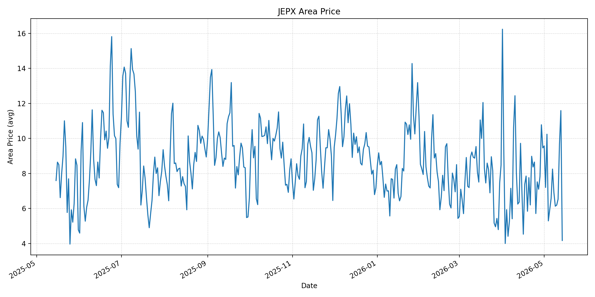
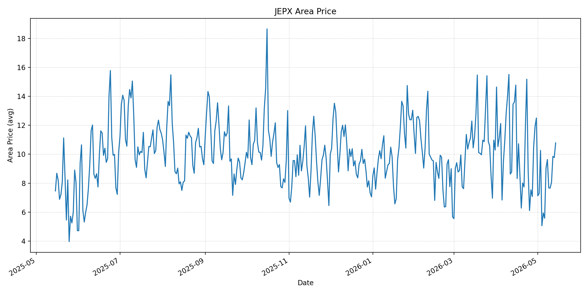
短期トレンド
JKMとJEPXシステムプライスの推移グラフ
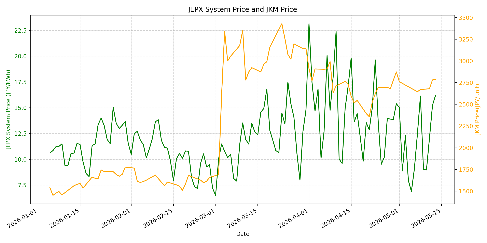
WTIの推移グラフ
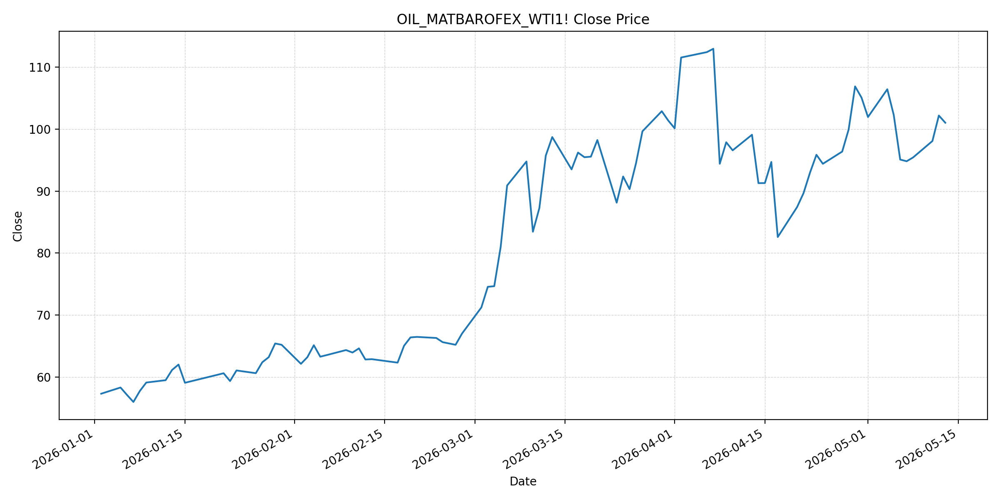
JEPXシステムプライス
JEPXは受渡日ベースの最新非空値で評価しています。最新値は 2026-05-14 分です。先週終値は 2026-05-07 時点の直近値、先月終値は 2026-04-30 時点の直近値で評価しています。
| エリア | 当日価格 | 前日価格 | 前日比（％） | 先週終値 | 先週比（％） | 先月終値 | 先月比（％） | 過去最高値 | 最高値比（％） |
|---|---|---|---|---|---|---|---|---|---|
| システム | 16.97 | 16.19 | 4.82 | 12.48 | 35.98 | 15.39 | 10.27 | 64.06 | -73.51 |
| 北海道 | 16.6 | 16.65 | -0.3 | 13.54 | 22.6 | 12.11 | 37.08 | 73.92 | -77.54 |
| 東北 | 16.58 | 16.68 | -0.6 | 13.38 | 23.92 | 12.11 | 36.91 | 84.92 | -80.48 |
| 東京 | 21.59 | 20.74 | 4.1 | 16.94 | 27.45 | 19.16 | 12.68 | 86.13 | -74.93 |
| 中部 | 20.61 | 19.47 | 5.86 | 15.42 | 33.66 | 16.47 | 25.14 | 52.06 | -60.41 |
| 北陸 | 18.26 | 15.66 | 16.6 | 13.69 | 33.38 | 13.32 | 37.09 | 46.48 | -60.72 |
| 関西 | 18.26 | 15.66 | 16.6 | 13.69 | 33.38 | 13.32 | 37.09 | 46.48 | -60.72 |
| 中国 | 16.5 | 13.73 | 20.17 | 9.09 | 81.52 | 13.32 | 23.87 | 46.48 | -64.5 |
| 四国 | 4.17 | 11.59 | -64.02 | 8.25 | -49.45 | 9.46 | -55.92 | 46.48 | -91.03 |
| 九州 | 10.78 | 9.77 | 10.34 | 9.04 | 19.25 | 12.5 | -13.76 | 40.54 | -73.41 |
LNG先物価格
最新値は 2026-05-13 の LNG(close) です。先週終値は 2026-05-01 時点の直近値、先月終値は 2026-04-30 時点の直近値で評価しています。
| 当日価格 | 前日価格 | 前日比（％） | 先週終値 | 先週比（％） | 先月終値 | 先月比（％） | 過去最高値 | 最高値比（％） |
|---|---|---|---|---|---|---|---|---|
| 2786 | 2782 | 0.14 | 2761 | 0.91 | 2874 | -3.06 | 10319 | -73 |
石油先物価格
最新値は 2026-05-13 の OIL(close) です。先週終値は 2026-05-06 時点の直近値、先月終値は 2026-04-30 時点の直近値で評価しています。
| 当日価格 | 前日価格 | 前日比（％） | 先週終値 | 先週比（％） | 先月終値 | 先月比（％） | 過去最高値 | 最高値比（％） |
|---|---|---|---|---|---|---|---|---|
| 101.02 | 102.18 | -1.14 | 95.08 | 6.25 | 105.07 | -3.85 | 123.7 | -18.33 |
ニュース
イラン情勢に関するニュース
- 2026年5月13日から14日にかけて、Reutersは、米イラン和平期待が後退し、イラン側が封鎖解除、戦争被害補償、ホルムズ海峡の主権を含む要求を維持していると報じました。トランプ米大統領は北京訪問で中国側とイラン問題を協議する見通しですが、停戦は不安定なままです。 参照: The Business Standard/Reuters, 2026-05-14
- 2026年5月12日、APは、クウェートがイランによる港湾島への攻撃未遂を主張し、米国はイランとホルムズ海峡を「制御下」に置いていると表明したと報じました。イラン側はクウェートの主張を否定していますが、地域の攻撃リスクと協議停滞は継続しています。 参照: AP, 2026-05-12
ホルムズ海峡経由の石油・LNGに関するニュース
- 2026年5月14日、Reutersは、ホルムズ海峡が大部分閉じた状態にある中でブレント原油が一時107ドル超まで上昇し、海峡が通常時に世界の石油・LNG輸送の約5分の1を担っていたと報じました。2隻目のカタールLNG船がイランとパキスタンを含む取り決めの下で通過した一方、通航量はなお限定的です。 参照: The Business Standard/Reuters, 2026-05-14
- 2026年5月13日、Reutersは、イラクとパキスタンがペルシャ湾からの原油・LNG出荷についてイランと合意したと報じました。ホルムズ海峡は中立的な通過ルートではなく、イランが管理する回廊として扱われるリスクが高まっています。 参照: Newsweek Japan/Reuters, 2026-05-13
ホルムズ海峡経由でない石油・LNGに関するニュース
- 2026年5月12日、日本政府は、ホルムズ海峡を通らない原油調達について5月は必要量の約6割、6月は7割以上の確保にめどが立ったと説明しました。調達先は中南米、アジア太平洋、中央アジア、アフリカへ広がっています。 参照: LOGI-BIZ online, 2026-05-12
- 資源エネルギー庁の対応ページでは、5月12日に上五島国家石油備蓄基地から約100万KLの放出を開始した一方、第二弾の放出スケジュール合計は約580万KLと示されています。代替調達の進展と備蓄運用が、非ホルムズ供給の中核になっています。 参照: 資源エネルギー庁, 2026-05-14確認
日本国内のイラン戦争に関係するニュース
- 2026年5月12日、Reutersは、高市首相が6月の原油輸入について前年の7割確保にめどがついたと述べたと報じました。4月は前年の2割、5月は約6割の確保見通しで、不足分は備蓄放出で補う構図です。 参照: Newsweek Japan/Reuters, 2026-05-12
- 2026年5月13日から14日に確認できる範囲では、日本国内のJEPX制度や電力市場制度に直接影響する新規の重大発表は確認できませんでした。一方、原油代替調達と備蓄放出の運用は、燃料費と物流費を通じて国内電力コストに影響します。 参照: The Business Standard/Reuters, 2026-05-14
インサイト
ニュース事項による日本の電力市場への影響（短期：数日〜1週間）
- JEPXシステムプライスは 16.97 円/kWhで前日比 4.82%、先週比 35.98% と上昇しました。東京 21.59、中部 20.61、北陸・関西 18.26 が高く、四国 4.17 との地域差が大きい状態です。
- LNGは 2786 と前日比 0.14%、OILは 101.02 と前日比 -1.14% ですが、OILは先週比 6.25% 上昇しています。ホルムズ通航が管理された回廊化し、LNG船通過も限定的であるため、数日から1週間は燃料・物流プレミアムが残りやすいです。
- 国内では5月に非ホルムズ原油の約 6 割確保が見込まれ、物理的な供給不安は抑えられています。ただし、JEPXの短期上昇は燃料価格だけでは説明しきれず、地域需給、太陽光出力、火力運用の組み合わせで日々の変動幅が大きくなる可能性があります。
ニュース事項による日本の電力市場への影響（長期：1ヶ月〜半年）
- OILは先月比 -3.85%、LNGは先月比 -3.06% と4月末を下回りますが、原油先物は100ドル台で推移しているとの報道が続いています。停戦協議が停滞し、ホルムズ通航がイランの承認制に近づく場合、燃料価格は下がっても高止まりしやすくなります。
- 日本の6月原油調達は前年の 7 割以上までめどが立つ一方、調達先の遠距離化と備蓄運用は輸送・保険・在庫コストを押し上げます。1ヶ月から半年では、これらのコストが燃料費調整や相対契約の価格条件に遅れて反映されるリスクがあります。
- JEPXシステムは先月比 10.27%、東京は 12.68%、中部は 25.14% 上昇しています。燃料調達の多角化が進んでも、ホルムズ経由LNGと石油製品の流通が完全正常化しない限り、電力調達では燃料価格ヘッジとエリア別の価格上振れ余地を織り込む必要があります。